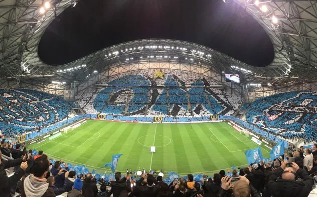
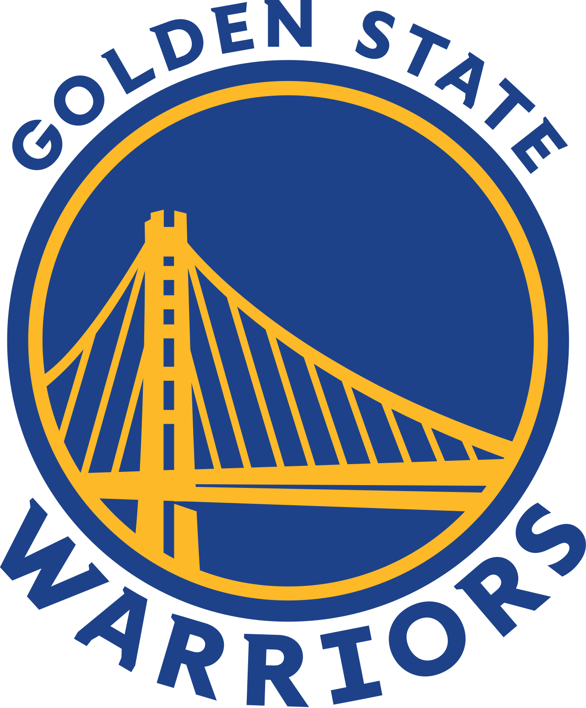

Hey! I'm Paul
Sport is a huge part of my life! I have two favorite sports, football and basketball. Indeed, I am a fervent supporter of Olympique de Marseille and the Golden State Warriors in the NBA.
Olympique de Marseille club has the best fans in the world and make incredible tifos
 Club website
